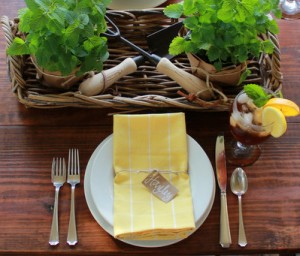
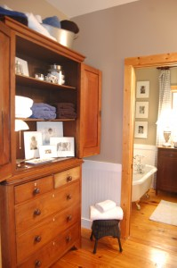

T H I S B L O G .
I dream of possibilities. My overdrive brain is constantly thinking of ways to improve things…make the room better, the food better, the celebration better, and in the end – make life better. Everywhere you look there are so many ideas to inspire these possibilities. I wanted a place to help me remember all of these possibilities and a place to be able to talk about them with others. So thank you for reading my words and carrying on the conversation here with me.
Talk of the House has been a LONG time in the making. One of the first blogs I stumbled upon was The Lettered Cottage. I was hooked. I read and read, and it led me to so many other wonderful blogs. Finally, after reading and loving blogs for years, I knew I wanted to be a part of this community …and it is a community. It is not just the pictures of beautiful spaces and all the wonderful ideas out there. It is the people – those creative souls who are willing to put themselves out there for all the world to see. They are the words behind the blogs. They are the ones who have inspired me to jump into this.
I chose the name Talk of the House not only because I love houses, and have been decorating them in my head, on paper, and in real life as far back as I can remember, but also because the talk is the best part of blogging to me. The blogs I love to read the most are those in which the writer carries on a conversation with their readers. It is through the comments that connections are made, and that, my friend, is the beauty of blogging. So I hope you enjoy this place I’m working on, and more than that, I hope you’ll talk of houses and all sorts of other randomness with me.
“It is the encounters with people that make life worth living.”
Guy de Maupassant
 T A L K I N G A B O U T M E .
T A L K I N G A B O U T M E .
I am….
* driven by the hope of possibilities and the power of words
* awestruck by how loving and creative the God of this universe is
* humbled by the unending patience of my love-at-first-sight husband
* amazed at each of my three children’s unique personalities and talents (Where did they get them??)
* obsessed with design
Things I like……laughter, black coffee, long hot baths, 15 minute naps, chick flicks, fresh flowers, Downton Abbey, eating in restaurants with good food and atmosphere, freshly mowed lawns, ironing linens, Christmas music all year long (yes, this drives my family crazy!), hot fudge sundaes from Sonic
Things I dislike….milk, running out of hot water, country music, being a mosquito magnet, people who drive too fast, scary movies, deer who eat all the flowers growing in my yard, our beagle howling in the middle of the night (at the deer who are eating all the flowers in the yard!)

.PNG)